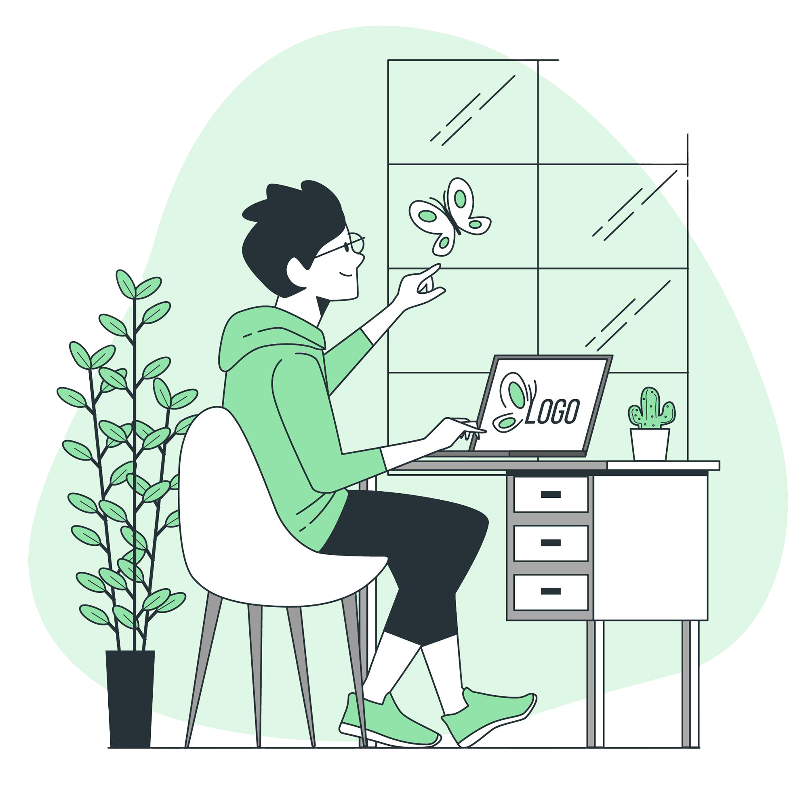

Hi,I am Aniruth
Welcome to my portfolio,
where design meets innovation,
and user experience takes center stage.
As a UI/UX designer, I am passionate about
creating memorable
digital experiences that resonate deeply with users.
Through a combination of creativity,
empathy, and technical prowess,
I strive to push the boundaries of design, delivering solutions
that not only meet but exceed expectations.
Explore my portfolio and discover the
transformative power of exceptional design.
Front-end Developer
I create stunning website for your business,
Highly expirenenced in web design
and development